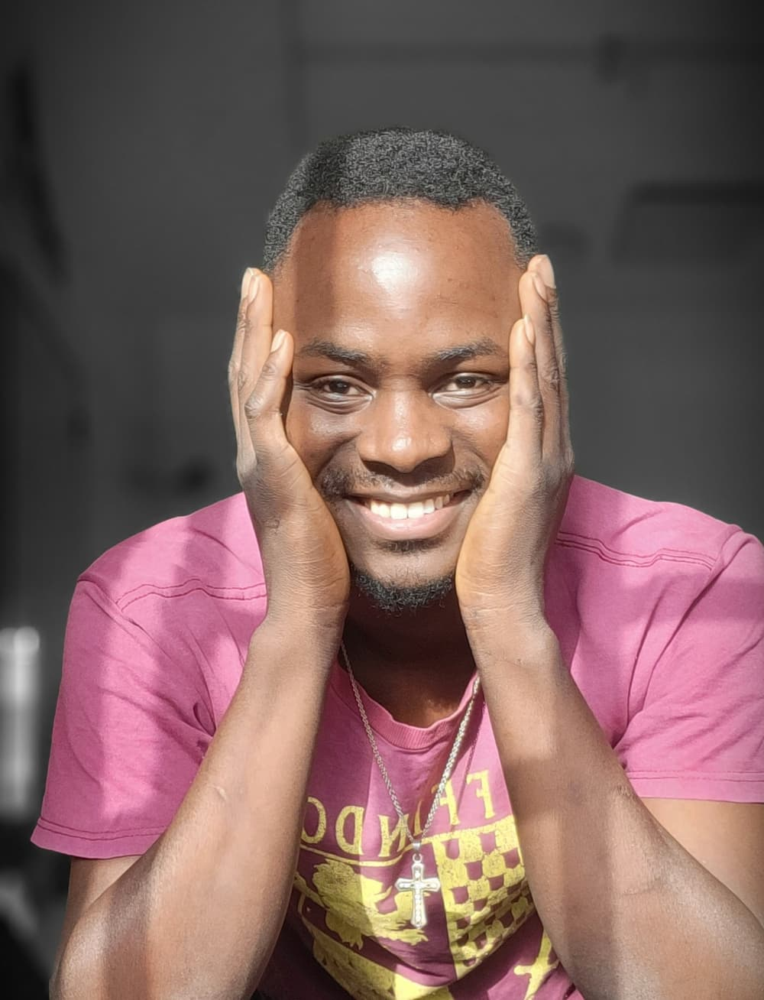

ROBERT, VICTOR | WDD 130

My name is Robert, Victor, I am a student of BYU Idaho.
I'm a twin, last born child with three siblings (my twin is one of those three), I am six feet tall, I like to sing and dance and I watch movies a lot. My favourite is red, my favourite food is "tuwon shinkafa da miyan geda", and my favourite thing about myself is my mind.
I am a licensed Medical Laboratory Technician, and I've worked in that capacity for half a decade. I rece#ntly decided to challenge myself and actually pursue the things that I love doing, one of which is fashion, and to that end I'm currently enrolled in an apprenticeship program with a fashion house, and another one of which is softwares, and to that end, I'm currently a student of BYU, studying Software Development.
I am working hard to be the best version of myself that god intended, and hopefully, along the way I can, not only help others with the things I achieve, but also inspire people to be the best version of themselves.